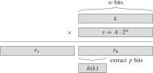

14 Hash Table
14.1 Modular Arithmetic
Introduction
Given integers a, b, and n with n>1, we say that a is congruent to b modulo n if n\mid(a-b), written
a\equiv b\,(\bmod n)
Some congruences
- 14\equiv2(\bmod12), since 12\mid(14-2).
- -4\equiv8(\bmod12), since 12\mid(-4-8).
- 34\equiv6(\bmod7), since 7\mid(34-6).
- 25\equiv0(\bmod5), since 5\mid(25-0).
Properties
Theorem (Congruence is an Equivalence Relation)
Let a, b, and n be integers with n>1.
- a\equiv a\,(\bmod n).
- If a\equiv b\,(\bmod n), then b\equiv a\,(\bmod n).
- If a\equiv b\,(\bmod n) and b\equiv c\,(\bmod n), then a\equiv c\,(\bmod n).
Theorem (Arithmetic Properties of Congruence)
Let a_{1}, a_{2}, b_{1}, b_{2}, and n be integers with n>1. If \begin{align*} a_{1} & \equiv b_{1}\,(\bmod n)\\a_{2} & \equiv b_{2}\,(\bmod n)\end{align*} then
- a_{1}+a_{2}\equiv b_{1}+b_{2}\,(\bmod n)
- a_{1}-a_{2}\equiv b_{1}-b_{2}\,(\bmod n)
- a_{1}a_{2}\equiv b_{1}b_{2}\,(\bmod n)
- ka_{1}\equiv kb_{1}\,(\bmod n),\,k\in\mathbb{Z}
- a_{1}^{k}\equiv b_{1}^{k}\,(\bmod n)
Word Examples
Compute (5162387+83645)\bmod10.
- First solution, 5162387+83645\equiv5246032\equiv2(\bmod10)
- Second solution, since 5162387\equiv7(\bmod10) and 83645\equiv5(\bmod10), we get 5162387+83645\equiv5+7\equiv12\equiv2(\bmod10)
Compute 3^{32}\bmod17.
- First solution, 3^{32}\equiv1853020188851841\equiv1(\bmod17)
- Second solution, We have
\begin{align*} 3^{32} & \equiv3^{2^{2^{2^{2^{2}}}}}\,(\bmod17)\\ & \equiv9^{2^{2^{2^{2}}}}\,(\bmod17)\\ & \equiv81^{2^{2^{2}}}\,(\bmod17)\equiv13^{2^{2^{2}}}\,(\bmod17)\\ & \equiv169^{2^{2}}\,(\bmod17)\equiv16^{2^{2}}\,(\bmod17)\\ & \equiv256^{2}\,(\bmod17)\equiv1^{2}\,(\bmod17)\\ & \equiv1\,(\bmod17) \end{align*}
Problems
- Find the last two-digits of 7^{32}
- Show that for any integer n, n^{2}\not\equiv2(\bmod5)
- Let n be any integer. Show that n^{3}\equiv n(\bmod6).
Random generator
A linear congruential generator (LCG) is an algorithm that yields a sequence of pseudo-randomized numbers

The generator is defined by recurrence relation:
r_{n}\equiv a\times r_{n-1}+c\,(\bmod m)
where \{r_{i}\} is the sequence of pseudorandom values, and
- m>0: the modulus
- 0<a<m: the multiplier
- 0\leq c<m: the increment
- r_{0}: the seed
RSA
RSA (Rivest–Shamir–Adleman) is a public-key cryptosystem that is widely used for secure data transmission
- In a public-key cryptosystem, the encryption key is public and distinct from the decryption key, which is kept secret (private)
The RSA algorithm involves four steps:
key generation: generate
- modulus n
- public key e
- private key d
key distribution
encryption: using public key e to encrypt the message m
c=\text{encrypt}(m)=m^{e}\bmod n
decryption: using private key d to decrypt the encrypted message c
m=\text{decrypt}(c)=c^{d}\bmod n
Example
An internet banking app is set up to receive transactions from many customers of a bank. The bank use a RSA system with n=3233,e=17,d=413
A client use the app to encrypt the message m=65
c=\text{encrypt}(65)=65^{17}\bmod3233=2790,
the encrypted message c=2790 is sent to the bank.
The bank can decrypt c=2790
m=\text{decrypt}(2790)=2790^{413}\bmod3233=65,
the decrypted message m=65 is thus received and interpreted as a “Balance Inquiry”
Power function
- How to compute y\gets x^{k}\bmod n
BIGINT pow(BIGINT x, BIGINT k, BIGINT n) {
BIGINT y = 1;
for(BIGINT i=1; i<=k; k++)
y *= x;
return y % n;
}14.2 Hash Table
Hash functions
Hash function is a method for computing array index from key (object).
The three principal criteria in selecting a hash function are as follows
- It should be consistent—equal keys must produce the same hash value.
- It should be efficient to compute.
- It should uniformly distributes the keys
The hash function depends on the key type.
Some popular hash functions: CRC32, MD5, SHA1, SHA2
Applications. Digital fingerprint, message digest, storing passwords.
Uniform hashing assumption
The hash functions that we use uniformly and independently distribute keys among the integer values between 0 and m-1.
- Hash value frequencies for words in “Tale of Two Cities” (10,679 keys, m=97)
Probability Review “bins and balls”
Events throw n balls uniformly at random into m bins.
Birthday problem. Expect two balls in the same bin after
\sim\sqrt{\frac{\pi m}{2}}
Coupon collector. Expect every bin has \geq1 ball after
\sim m\ln m
Load balancing. After m tosses, expect most loaded bin has
\Theta\left(\frac{\log m}{\log\log m}\right)
Integer keys
- The most commonly used method for hashing integers is called modular hashing (division method)
h(k)=k\bmod m
| key k | hash (m=100) | hash (m=97) |
|---|---|---|
212 |
12 |
18 |
618 |
18 |
36 |
302 |
2 |
11 |
940 |
40 |
67 |
702 |
2 |
23 |
704 |
4 |
25 |
612 |
12 |
30 |
606 |
6 |
24 |
772 |
72 |
93 |
510 |
10 |
25 |
423 |
23 |
35 |
650 |
50 |
68 |
317 |
17 |
26 |
907 |
7 |
34 |
507 |
7 |
22 |
304 |
4 |
13 |
714 |
14 |
35 |
857 |
57 |
81 |
801 |
1 |
25 |
900 |
0 |
27 |
413 |
13 |
25 |
701 |
1 |
22 |
418 |
18 |
30 |
601 |
1 |
19 |
Floating-point keys
- If the keys are real numbers between 0 and 1, we might just multiply by m and round off to the nearest integer to get an index between 0 and m-1.
| key k | hash (m=100) |
|---|---|
.513870656 |
51 |
.175725579 |
17 |
.308633685 |
30 |
.534531713 |
53 |
.947630227 |
94 |
.171727657 |
17 |
.702230930 |
70 |
.226416826 |
22 |
.494766086 |
49 |
.124698631 |
12 |
.083895385 |
8 |
.389629811 |
38 |
.277230144 |
27 |
.368053228 |
36 |
.983458996 |
98 |
.535386205 |
53 |
.765678883 |
76 |
.646473587 |
64 |
.767143786 |
76 |
.780236185 |
78 |
.822962105 |
82 |
.151921138 |
15 |
.625476837 |
62 |
.314676344 |
31 |
.346903890 |
34 |
In general, we can use the multiplication method for creating hash functions operates in two steps
First, we multiply the key k by a constant A in the range 0<A<1 and extract the fractional part of kA.
Then, we multiply this value by m and take the floor of the result.
h(k)=\left\lfloor m\cdot\left(k\cdot A\bmod1\right)\right\rfloor
where k\cdot A\bmod1 means the fractional part of kA.
Knuth suggests that
A=\frac{\sqrt{5}-1}{2}\approx0.6180339887...
The multiplication method of hashing
Another multiplication method method
h(k)=\left\lfloor k\cdot A\right\rfloor \bmod m
| key k | k\%97 | k\%100 | \left\lfloor k\cdot A\right\rfloor \%100 |
|---|---|---|---|
16838 |
57 |
38 |
6 |
5758 |
35 |
58 |
58 |
10113 |
25 |
13 |
50 |
17515 |
55 |
15 |
24 |
31051 |
11 |
51 |
90 |
5627 |
1 |
27 |
77 |
23010 |
21 |
10 |
20 |
7419 |
47 |
19 |
85 |
16212 |
13 |
12 |
19 |
4086 |
12 |
86 |
25 |
2749 |
33 |
49 |
98 |
12767 |
60 |
67 |
90 |
9084 |
63 |
84 |
14 |
12060 |
32 |
60 |
53 |
32225 |
21 |
25 |
16 |
17543 |
83 |
43 |
42 |
25089 |
63 |
89 |
5 |
21183 |
37 |
83 |
91 |
25137 |
14 |
37 |
35 |
25566 |
55 |
66 |
0 |
26966 |
0 |
66 |
65 |
4978 |
31 |
78 |
76 |
20495 |
28 |
95 |
66 |
10311 |
29 |
11 |
72 |
11367 |
18 |
67 |
25 |
String keys
We simply treat strings as huge integers and use modular hashing
- For example, for character data with 7-bit encoding, we treat the key as a base-128 number \to the word “now” corresponds to the number 1816567
110\times128^{2}+111\times128^{1}+119\times128^{0}
- Modular hash functions for strings
| key k | number | m=64 | m=31 |
|---|---|---|---|
| now | 1816567 |
55 |
29 |
| for | 1685490 |
50 |
20 |
| tip | 1914096 |
48 |
1 |
| ilk | 1734251 |
43 |
18 |
| dim | 1651949 |
45 |
21 |
| tag | 1913063 |
39 |
22 |
| jot | 1751028 |
52 |
24 |
| sob | 1898466 |
34 |
26 |
| nob | 1816546 |
34 |
8 |
| sky | 1897977 |
57 |
2 |
| hut | 1719028 |
52 |
16 |
| ace | 1602021 |
37 |
3 |
| bet | 1618676 |
52 |
11 |
| men | 1798894 |
46 |
26 |
| egg | 1668071 |
39 |
23 |
| few | 1684215 |
55 |
16 |
| jay | 1749241 |
57 |
4 |
| owl | 1833964 |
44 |
4 |
| joy | 1751033 |
57 |
29 |
| rap | 1880304 |
48 |
30 |
| gig | 1701095 |
39 |
1 |
| wee | 1962725 |
37 |
22 |
| was | 1962227 |
51 |
20 |
| cab | 1634530 |
34 |
24 |
| wad | 1962212 |
36 |
5 |
- How do we compute the hash function for a word such as “averylongkey” ?
- In 7-bit ASCII, this word corresponds to the 84-bit number
\begin{align*} 97\cdot128^{11}+118\cdot128^{10}+101\cdot128^{9}+114\cdot128^{8}+121\cdot128^{7}\\ +108\cdot128^{6}+111\cdot128^{5}+110\cdot128^{4}+103\cdot128^{3}\\ +107\cdot128^{2}+101\cdot128^{1}+121\cdot128^{0} \\ =14798475217809252997067513 \end{align*}
To compute a modular hash function for long keys, we transform the keys piece by piece.
A string s=s_{0}s_{1}...s_{n} where each character is encoded by r-radix number number=s_{0}\cdot r^{n}+s_{1}\cdot r^{n-1}+...+s_{n}\cdot r^{0} can be computed using Horner’s rule number=((...((s_{0}\cdot r+s_{1})\cdot r+s_{2})\cdot r+...)\cdot r+s_{n})
We can take advantage of arithmetic properties of the
modfunction and use Horner’s algorithm
unsigned int hash(string &s, int m) {
unsigned int hash_value = 0;
unsigned int r = 127;
for (int k = 0; k < s.length(); ++k)
hash_value = (hash_value * r + s[k]) % m;
return hash_value;
}- Challenge: Can we make any improvement for long strings?
Compound keys
- If the key type has multiple integer fields, we can typically mix them together in the way just described for string values.
- For example, suppose that search keys are of type
Date, which has three integer fields:day(two-digit day)month(two-digit month)year(four-digit year)
- We compute the number
int hash_value = (((day * r + month) % m ) * r + year) % m;Hash Table
Introduction
A hash table (hash map) is a data structure that implements an associative array abstract data type, a structure that can map keys to values. A hash table uses a hash function h to map a key of U into an index (hash code) of an array T[0...m-1]. \begin{array}{lccc} h: & U & \to & T\\ k & \mapsto & h\left(k\right) \end{array}
Given a hash table T with m slots that stores n elements, we define the load factor, for T as \alpha=\frac{n}{m}, that is, the average number of elements stored in a chain.
In practice. The load factor \dfrac{1}{8}\leq\alpha\leq\dfrac{1}{2} (for open addressing).
Collision
A collision is a situation when two different keys may hash to the same hash code. k_{1}\neq k_{2},\qquad h(k_{1})=h(k_{2})
There are two different approaches to collision resolution:
- Separate chaining
- Open addressing
Separate chaining
- In chaining, we put all the elements that hash to the same slot in a linked list
function Chained-Hash-Insert(T, x)
insert x at the head of list T[h(x.key)]
function Chained-Hash-Search(T, k)
search for an element with key k in list T[h(k)]
function Chained-Hash-Delete(T, x)
delete x from the list T[h(x.key)]In a hash table in which collisions are resolved by chaining, an unsuccessful search takes expected time \Theta(1+\alpha) (the number of compares), under the assumption of simple uniform hashing.
In a hash table in which collisions are resolved by chaining, a successful search takes time \Theta(1+\alpha), on the average, under the assumption of simple uniform hashing.
Open addressing
Introduction
- Separate chaining hashing has the disadvantage of using linked lists. This could slow the algorithm down a bit because of the time required to allocate new nodes and essentially requires the implementation of a second data structure.
- Another approach to implementing hashing is to store n key-value pairs in a hash table of size m>n, relying on empty entries in the table to help with collision resolution. Such methods are called open-addressing hashing methods.
- To perform insertion using open addressing, we successively examine, or probe, the hash table until we find an empty slot in which to put the key.
- To determine which slots to probe, we extend the hash function to include the probe number (starting from 0) as a second input. Thus, the hash function becomes h:U\times\{0,1,...,m-1\}\to\{0,1,...,m-1\} the probe sequence \left\langle h(k,0),h(k,1),...,h(k,m-1)\right\rangle be a permutation of \left\langle 0,1,...,m-1\right\rangle \qquad\text{(\textbf{constraint})}
function Hash-Insert(T, k)
i ← 0
repeat
j ← h(k,i)
if T[j] = null
T[j] ← k
return j
else i ← i+1
until i=m
error "hash table overflow"function Hash-Search(T, k)
i ← 0
repeat
j ← h(k,i)
if T[j] = k
return j
i ← i+1
until T[j] = null or i=m
return nullRandom Probing
Asssumption: For every k\in U, \left\langle h(k,0),h(k,1),...,h(k,m-1)\right\rangle is random permutation, independent of all other permutations.
\to the probe sequence of each key is equally likely to be any of the m! permutations of \left\langle 0,1,...,m-1\right\rangle
Note: the assumption is difficult to implement.
Simple implementation: pseudo-random probing h(k,i)=(h'(k)+r_{i})\bmod m where h'(k) be an ordinary hash function and r_{i} be the ith value in a random permutation of the numbers from 1 to m-1. All insertions, deletions and searches use the same sequence of random numbers.
Probabilistic analysis of random probing
Given an open-address hash table with load factor \alpha=n/m<1,
- the expected number of probes in an unsuccessful search/insert is at most \frac{1}{1-\alpha}
- the expected number of probes in a successful search is at most \frac{1}{\alpha}\ln\frac{1}{1-\alpha}
Proof. In an unsuccessful search, let us define the random variable X to be the number of probes made in an unsuccessful search and and let us also define the event A_{i}, for i=1,2,..., to be the event that an ith probe occurs and it is to an occupied slot. \begin{align} Pr(X\geq i) & =\frac{n}{m}\cdot\frac{n-1}{m-1}\cdot\frac{n-2}{m-2}\cdots\frac{n-i+2}{m-i+2}\nonumber \\ & \leq\left(\frac{n}{m}\right)^{i-1}\nonumber \\ & =\alpha^{i-1} \end{align} The expected number of probes \begin{align} E[X] & =\sum_{i=1}^{\infty}Pr(X\geq i)\nonumber \\ & \leq\sum_{i=1}^{\infty}\alpha^{i-1}\nonumber \\ & =\frac{1}{1-\alpha} \end{align}
Linear probing
The simplest open-addressing method is called linear probing: when there is a collision, then we just check the next entry in the table. Linear probing is characterized by identifying three possible outcomes:
Key equal to search key: search hit
Empty position (null key at indexed position): search miss
Key not equal to search key: try next entry
Given an ordinary hash function h':U\to\{0,1,...,m-1\}, the method of linear probing uses the hash function h(k,i)=(h'(k)+i)\bmod m
Linear probing is easy to implement, but it suffers from a problem known as primary clustering.
Clustering
Cluster is a contiguous block of items.
Observation. New keys likely to hash into middle of big clusters.
- Clustering in linear probing (m=64)
Probabilistic analysis of linear probing
Under uniform hashing assumption, the average number of probes in a linear probing hash table of size m that contains n: \sim\frac{1}{2}\left(1+\frac{1}{1-\alpha}\right)\qquad\text{search hit} \sim\frac{1}{2}\left(1+\frac{1}{(1-\alpha)^{2}}\right)\qquad\text{search miss/insert}
Random vs. linear probing
- Assuming random hash functions
Comparison of hashing methods
- Theoretical comparison of hashing methods
| Load factor \alpha | 0.1 | 0.5 | 0.8 | 0.9 | 0.99 | 2 |
|---|---|---|---|---|---|---|
| Successful search, expected number of probes: | ||||||
| Chaining | 1.05 | 1.25 | 1.4 | 1.45 | 1.5 | 2 |
| Open, random probes | 1.05 | 1.4 | 2 | 2.6 | 4.6 | - |
| Open, linear probes | 1.06 | 1.5 | 3 | 5.5 | 50.5 | - |
| Unsuccessful search, expected number of probes: | ||||||
| Chaining | 0.1 | 0.5 | 0.8 | 0.9 | 0.99 | 2 |
| Open, random probes | 1.1 | 2 | 5 | 10 | 100 | - |
| Open, linear probes | 1.12 | 2.5 | 13 | 50 | 5000 | - |
- Empirical comparison of hashing methods
| Load factor \alpha | 0.1 | 0.5 | 0.8 | 0.9 | 0.99 | 2 |
|---|---|---|---|---|---|---|
| Successful search, expected number of probes: | ||||||
| Chaining | 1.04 | 1.2 | 1.4 | 1.4 | 1.5 | 2 |
| Open, random probes | 1.04 | 1.5 | 2.1 | 2.7 | 5.2 | - |
| Open, linear probes | 1.05 | 1.6 | 3.4 | 6.2 | 21.3 | - |
| Unsuccessful search, expected number of probes: | ||||||
| Chaining | 0.1 | 0.5 | 0.8 | 0.9 | 0.99 | 2 |
| Open, random probes | 1.13 | 2.2 | 5.2 | 11.9 | 126 | - |
| Open, linear probes | 1.13 | 2.7 | 15.4 | 59.8 | 430 | - |
Quadratic Probing
- Quadratic probing uses a hash function of the form h(k,i)=(h'(k)+c_{1}i+c_{2}i^{2})\bmod m where h' is an auxiliary hash function, c_{1} and c_{2}\neq0 are auxiliary constants h(k,i)=(h'(k)+i^{2})\bmod m\qquad\text{(simple form)}
- Note: to make full use of the hash table, the values of c_{1}, c_{2}, and m are constrained
- This method works much better than linear probing. It still suffers from another problem known as secondary clustering.
If quadratic probing is used, and the table size m is prime, then a new element can always be inserted if the table is at least half empty.
Double hashing
- Double hashing uses a hash function of the form h(k,i)=(h_{1}(k)+ih_{2}(k))\bmod m where h_{1} and h_{2} are auxiliary hash functions.
- Note: The value h_{2}(k) must be relatively prime to the hash-table size m for the entire hash table to be searched.
- It is one of the best methods because the permutations produced have many of the characteristics of randomly chosen permutations.
Dynamic hash tables
Parameter table size m
m too small \Rightarrow search time blows up.
- As the number of keys in a hash table increases, search performance degrades.
m too large \Rightarrow too many empty array entries.
Waste memory.
If \alpha>1/2 then double the table’s size m\gets2m Doubling the table is an expensive operation because everything in the table has to be reinserted, but it is an operation that is performed infrequently.
If \alpha<1/8 then halve the the table’s size m\gets\frac{m}{2}
Cost summary for symbol-table implementations
| implementation | worst case | average case | key | ||||
|---|---|---|---|---|---|---|---|
| search | insert | remove | search hit | insert | remove | ||
| BST | N | N | N | c\log_{2}N | c\log_{2}N | \sqrt{N} | compare |
| AVL | c_{a}\log_{2}N | - | - | \log_{2}N | - | - | compare |
| RB | c_{r}\log_{2}N | - | - | \log_{2}N | - | - | compare |
| chain hash | N or \ln N | - | - | 1 | - | - | equal |
| linear hash | N or \ln N | - | - | 1 | - | - | equal |
Note: c=1.39,c_{a}=1.44,c_{r}=2.0
14.3 Universal hashing
Problem Any fixed hash function is vulnerable to such terrible worst-case behavior.
Solution Choose the hash function randomly in a way that is independent of the keys that are actually going to be stored.
Let \mathcal{H} be a finite collection of hash functions that map a given universe U of keys into the range {0,1,…,m-1}. \mathcal{H} is said to be universal if for each pair of distinct keys k,l\in U, \left|\{h\in\mathcal{H}\mid h(k)=h(l)\}\right|\leq\frac{|\mathcal{H}|}{m}
- In other words, the chance of a collision between k and l is 1/m if we choose h randomly from \mathcal{H}.
Suppose that a hash function h is chosen from a universal collection of hash functions and is used to hash n keys into a table T of size m, for a given key k, we have E[\text{\# collision with }k]\leq\frac{n}{m}
Designing a universal class of hash functions
Choose a prime number p large enough so that every possible key k is in the range 0 to p-1.
We define the hash function h_{ab}, a\in\mathbb{Z}_{p}^{\ast} and b\in\mathbb{Z}_{p} (\mathbb{Z}_{p}=\{0,1,2...,p-1\} and \mathbb{Z}_{p}^{\ast}=\{1,2...,p-1\}) h_{ab}(k)=((ak+b)\bmod p)\bmod m
The family of all such hash functions is \mathcal{H}_{pm}=\{h_{ab}:a\in\mathbb{Z}_{p}^{\ast}\text{ and }b\in\mathbb{Z}_{p}\}
The class \mathcal{H}_{pm} of hash functions is universal.
14.4 Advanced Hash Table
Perfect hashing
Problem Given a set of n keys, construct a static hash table of size m such that Search action takes O(1) time in the worst case.
Solution O(n^{2}) space
Suppose that we store n keys in a hash table of size m=n^{2} using a hash function h randomly chosen from a universal class of hash functions. Then, the probability is less than 1/2 that there are any collisions.
Example 1
- Using perfect hashing to store the set K=\{10,22,37,52,60,70,72\}.
- The hash table T with size of m=n^{2}=49 and the hash function h(k)=((ak+b)\bmod p)\bmod m where a=1, b=0, p=73
Solution O(n) space
Idea: We use two levels of hashing, with universal hashing at each level.
- The first level: it is the same as for hashing with chaining
- The second level: we use a small secondary hash table S_{j} with an associated hash function h_{j}. By choosing the hash functions h_{j} carefully, we can guarantee that there are no collisions at the secondary level.
function CreatePerfectTable(T, {k1,k2,...,kn}, H)
Carefully choose h and {h0, h1, ... hm-1} from H
count[0,...,m-1] ← {0,...,0}
for i ← 1 to n
count[h(ki)] ← count[h(ki)] + 1
for i ← 0 to m-1
allocate count[i]^2 memory slots to secondary table Si and T[i] -> Si
for i ← 1 to n
j ← h(ki)
p ← hj(ki)
Sj[p] ← kifunction SearchPerfectTable(T, k)
j ← h(k)
if T[j] = null return null
p ← hj(k)
return Sj[p]Example 2
Using perfect hashing to store the set K=\{10,22,37,52,60,70,72\}.
- The table T uses the outer hash function h(k)=((ak+b)\bmod p)\bmod m where a=3, b=42, p=101 and m=9
- A secondary table S_{j} uses the hash function h_{i}(k)=((a_{i}k+b_{i})\bmod p)\bmod m_{i} where m_{i}=count_{i}^{2}
Cuckoo hashing
In cuckoo hashing, we maintain - two tables, each more than half empty. - two independent hash functions randomly chosen from a universal class of hash functions that can assign each item to a position in each table.
function InsertCuckooTable(T1, h1, T2, h2, k)
repeat
Insert into the first table T1
if there was a collision then
move the current key l to the second table T2
insert the new key k
The displaced key l is inserted in its alternative location,
again kicking out any key that might reside there.
until successfunction SearchCuckooTable(T, k)
return search in two tables T1 and T214.5 Workshop
Quiz
- What is a hash function?
- What is a hash table?